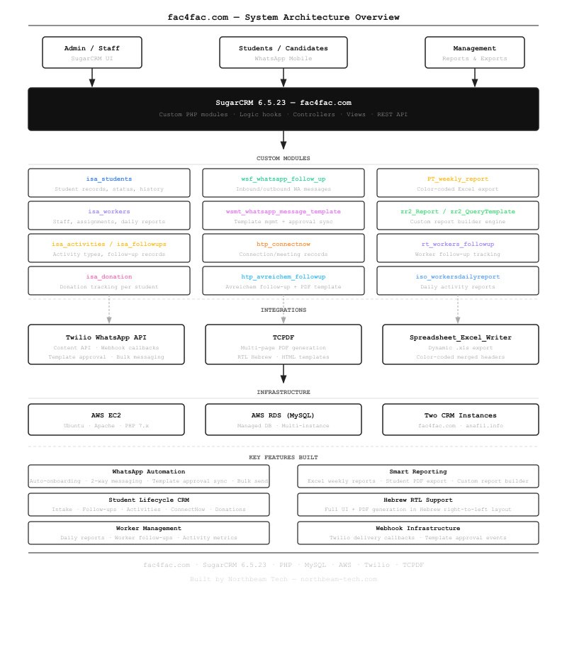

fac4fac.com — Custom SugarCRM Platform for Student Management & WhatsApp Automation
A fully customized CRM built from the ground up on SugarCRM — covering the complete student lifecycle, WhatsApp automation via Twilio, Hebrew RTL document export, and dynamic management reporting.
About the Project
fac4fac.com is an operational CRM platform built for an Israeli organization that manages hundreds of students through an educational and mentorship program. The organization needed more than a vanilla CRM: student records had to link to workers, activities, follow-ups, WhatsApp conversations, ConnectNow meeting records, and donation history — all in Hebrew.
We took SugarCRM 6.5.23 as the foundation and built 15+ custom PHP modules, a full Twilio WhatsApp integration, a bulk PDF export engine, and a dynamic Excel reporting suite on top of it. The platform runs on AWS (EC2 + RDS) as two separate instances for two related organizations.
System Architecture

What We Built
Student Lifecycle Management
The core of the platform is the isa_students module, extended with custom fields, logic hooks, and linked relationships to every other module in the system.
Each student record connects to: follow-up history (isa_followups), activity participation (isa_activities), worker assignments (isa_workers), ConnectNow meeting records (htp_connectnow), Avreichem follow-up documents (htp_avreichem_followup), donation records (isa_donation), and their full WhatsApp conversation thread.
WhatsApp Automation via Twilio
The platform has a full two-way WhatsApp integration built on Twilio's API. Staff send WhatsApp messages directly from student records in SugarCRM; all inbound replies are captured and linked back automatically via webhook. For outbound messaging outside the 24-hour window, the system uses pre-approved message templates managed entirely within SugarCRM — including placeholder conversion, Twilio Content API submission, approval status sync, and bulk send.
- Auto-onboarding conversation flow for new contacts
- Two-way messaging with delivery status tracking
- WhatsApp template management with Twilio approval sync
- Bulk messaging to filtered student lists
- Audio/media message support
Bulk PDF Export with Hebrew RTL
Staff can select any number of students from the list view and export a single multi-page PDF — one page per student — containing personal details, follow-up history, ConnectNow records, and tasks. The PDF engine uses TCPDF configured for right-to-left Hebrew text with DejaVu Unicode fonts. An HTML template file controls the page layout; a helper controller fills in field values and appends linked record tables per student before rendering.
Dynamic Excel Weekly Reports
The weekly report export generates a structured .xls workbook with three color-coded section headers: Activities (blue), Wait for Connect (orange), and Time Until Connected (green).
Activity columns are dynamically driven by the isa_activities table — add a new activity type and it appears in the next export automatically.
Non-zero cells are highlighted to make the key numbers immediately visible without scanning.
Custom Report Builder
The zr2_* module family provides a custom query and report builder: admins define query templates with parameters, link them to report containers, and generate outputs without touching SQL.
This gives non-technical staff access to complex filtered views of the data.
Worker & Activity Tracking
Workers (staff/advisors) are managed in isa_workers with daily activity reports (iso_workersdailyreport) and dedicated follow-up tracking (rt_workers_followup).
The weekly Excel report pulls from this data to give management a consolidated view of staff performance across all activities and student contacts.
Technical Highlights
- SugarCRM logic hooks —
beforeSave,afterSave, andafterRelationshipDeletehooks handle automated sync without modifying core files - Twilio webhook handler — a single endpoint processes inbound messages, delivery callbacks, template approval events (
AppMonitorTriggerSid), and audio media downloads - Hebrew RTL throughout — the PDF export and specific UI views support right-to-left Hebrew text using TCPDF's language array and DejaVu fonts
- Named placeholder conversion — admin-readable
{student_name}style variables in templates are automatically converted to Twilio's indexed{{1}}format on save - Dual-instance architecture — two CRM deployments (fac4fac.com + anafil.info) share the same AWS RDS cluster with separate databases
Stack
Related Technical Posts
- WhatsApp Auto-Onboarding for New Students in SugarCRM
- Two-Way WhatsApp Messaging for Existing Students
- Auto-Sync WhatsApp Template Approvals with Twilio
- Color-Coded Weekly Excel Reports with Dynamic Columns
- Exporting Student Records to Multi-Page PDF with TCPDF
Building something similar? Get in touch →